정적 웹북에서 지식 플랫폼까지 — 7단계 발전 경과와 향후 방향
2025년 정적 웹북으로 시작하여, RAG 검색, AI 번역, 문서 검증까지 7단계에 걸쳐 발전해 왔습니다. 현재 Explorer, Notebook, Verify 3개 서브시스템이 운용 중이며, Author(AI 저작) 시스템을 설계 중입니다.
이 문서는 플랫폼이 어디서 출발하여 어디까지 왔고, 앞으로 어디로 가는지를 다룹니다. 기능 나열이 아닌 개발 경과와 의사결정 배경에 초점을 맞춘 보고 문서입니다.
정적 문서 뷰어에서 지식 플랫폼으로 진화한 7단계입니다.
| 단계 | 목표 | 주요 결과 |
|---|---|---|
| Phase 1 | 정적 웹북 | DOCX → HTML 변환, 문서 트리 네비게이션, 다크모드 |
| Phase 2 | RAG 검색 + 에디터 | 하이브리드 검색 (BM25+FAISS), AI 채팅, Monaco 에디터 |
| Phase 3 | 관리 + 통계 | RBAC 3단계, 관리자 설정 GUI, 접속 통계, 콘텐츠 업로드 |
| Phase 4 | 번역 시스템 | Notebook 서브시스템 — PDF 번역, 듀얼 패널 뷰어, AI 분석 |
| Phase 5 | 문서 검증 | Verify 서브시스템 — 비교, 유사도, 21종 규칙 엔진 |
| Phase 6 | 품질 강화 | 디자인 시스템 (tokens.css), 운영 안정성, 구조화 로깅 |
| Phase 7 | 플랫폼 통합 | 공통 헤더, 시스템 전환, 플랫폼 가이드, 런처 통합 |
기술 문서 생애주기의 네 단계를 각각의 서브시스템이 담당합니다.
| 시스템 | 역할 | 상태 | 핵심 기능 |
|---|---|---|---|
| Explorer | 읽기 / 소비 | 운용 중 | 하이브리드 RAG 검색, AI 채팅, 문서 트리, 용어집 |
| Notebook | 이해 / 내재화 | 운용 중 | PDF 번역, AI 요약, Q&A, 마인드맵, 마킹 |
| Verify | 검증 / 판단 | 운용 중 | 문서 비교, 유사도 검사, 21종 규칙 자동 점검 |
| Author | 생산 / 창작 | 설계 중 | AI 보조 문서 저작, 요구사항 추적, 참조 인용 (계획) |

플랫폼 4체제 — 기술 문서의 소비, 이해, 검증, 생산 순환
| 영역 | 파일 수 | 코드 줄 수 |
|---|---|---|
| JavaScript (프론트엔드) | 14+ 모듈 | 12,000+ 줄 |
| CSS (디자인 시스템) | 16 파일 | 9,100+ 줄 |
| Python (백엔드 API/서비스) | 24+ 모듈 | 4,000+ 줄 |
| Python (변환 도구) | 6 모듈 | 3,000+ 줄 |
| 합계 | 60+ 파일 | 28,000+ 줄 |
| 항목 | 수치 |
|---|---|
| API 엔드포인트 | 55+ 개 |
| 서비스 모듈 (백엔드) | 28개 |
| 자동화 규칙 (Verify) | 21종 |
| 항공 용어집 | 26,000+ 항목 |
| 콘텐츠 카테고리 | 6개 범용 + KF-21 개발백서 |
하이브리드 RAG 검색에서 Recall@5 = 100%, MRR = 0.967을 달성했습니다. 키워드(BM25)와 벡터(FAISS + bge-m3)를 RRF로 병합하고, Cross-encoder(bge-reranker-v2-m3)로 리랭킹합니다. 구조 보존 인덱싱(테이블 → Markdown, 수식 → LaTeX)이 핵심 차별점입니다.
DOCX 변환기가 스타일 기반 heading 감지, 표 병합(colspan/rowspan), OMML → MathML 변환(18종 수학 요소)을 지원합니다. PDF 변환기는 TOC 자동 감지와 3-pass 퍼지 매칭(threshold 0.80)으로 문서 구조를 복원합니다.
인터넷 연결, 외부 클라우드, npm, 빌드 도구 없이 동작합니다. Python wheel 패키지 오프라인 설치, Ollama 로컬 LLM, FAISS 인메모리 벡터 검색으로 폐쇄망 완전 자립 운용이 가능합니다.
주요 기술 결정의 근거입니다.
| 결정 | 선택 | 근거 |
|---|---|---|
| 프론트엔드 | Vanilla JS 유지 | 폐쇄망에서 빌드 불가. 작동하는 코드 폐기 비용 > 전환 이득. |
| 백엔드 | FastAPI 통일 | 비동기 처리, 자동 API 문서, Python ML 생태계 접근. |
| AI 엔진 | Ollama (로컬) | 폐쇄망 제약. OpenAI API 사용 불가. |
| 데이터 저장 | SQLite + JSON | 동시 10~30명 규모. 외부 DB 불필요. |
| 공용 포맷 | Markdown | 추출, 번역, 편집, 인덱싱의 공통 중간 표현. |
| 시스템 연계 | 독립 운용 우선 | 외부 시스템(K-Spec 등)은 플랫폼 외부에서 연동. |
| 기능 | 본 플랫폼 | NotebookLM | Obsidian |
|---|---|---|---|
| 폐쇄망 동작 | 가능 | 불가 | 가능 |
| PDF 번역 | 가능 (레이아웃 보존) | 불가 | 불가 |
| RAG 검색 | 하이브리드 + 리랭킹 | 자체 구현 | 플러그인 필요 |
| 문서 비교/검증 | 21종 규칙 엔진 | 불가 | 불가 |
| 도메인 용어집 | 26,000+ 항공 용어 | 불가 | 수동 구축 |
| 기술 문서 특화 | 수식, 표, 규격 지원 | 범용 | 범용 |
| 접근 제어 | RBAC 3단계 | Google 계정 | 로컬 전용 |
| 단계 | 목표 | 상태 | 주요 내용 |
|---|---|---|---|
| Phase A | 품질 향상 | 완료 | 디자인 시스템, 운영 안정성, Notebook 플랫폼 완성 |
| Phase A+ | 지식 플랫폼 | 완료 | Verify 고도화, 플랫폼 가이드, 관리자 설정 통합 |
| Phase B | 데이터 아키텍처 | 진행 중 | PDF 입력 통일, Notebook 뷰어 개선, MD 추출 품질 강화 |
| Phase C | Author MVP | 계획 | AI 보조 문서 저작, 요구사항 추적, 참조 인용 |
| Phase D | 시스템 연계 | 계획 | 서브시스템 간 데이터 흐름, 크로스 참조 |
| Phase E | 공통 서비스 | 계획 | 공유 컴포넌트 분리, 인프라 통합 |